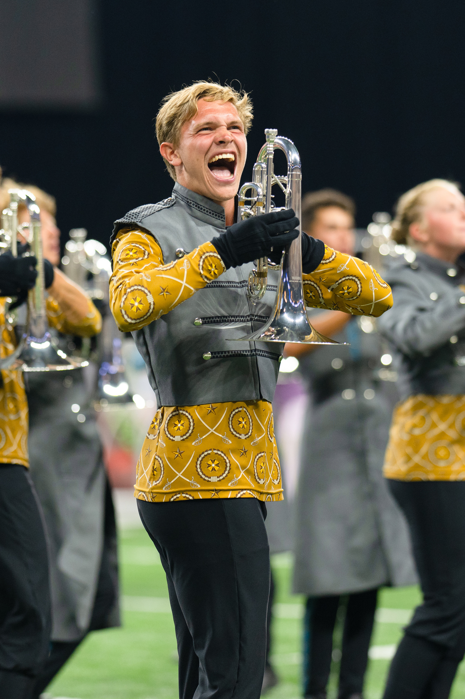
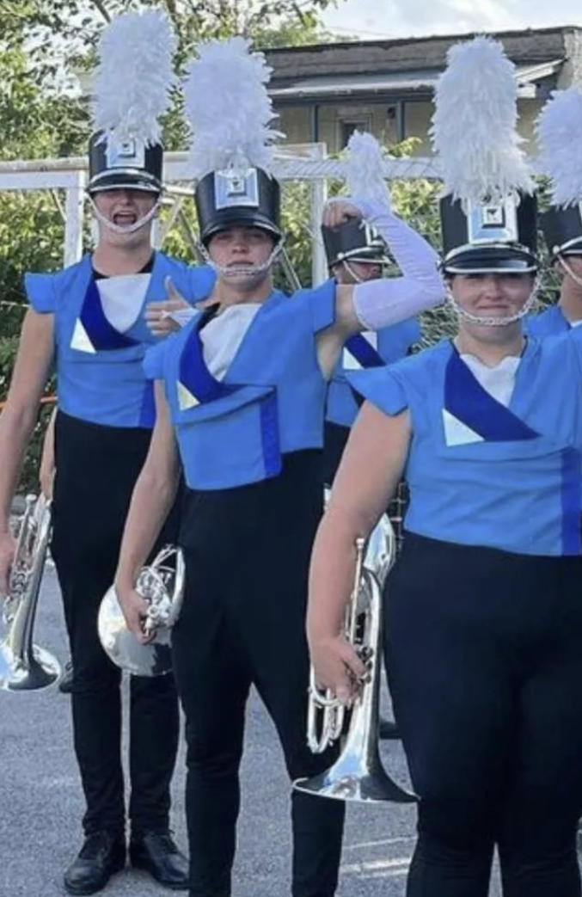
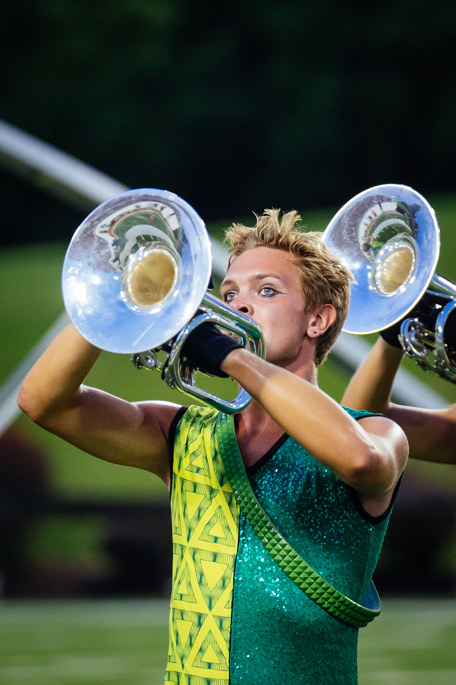
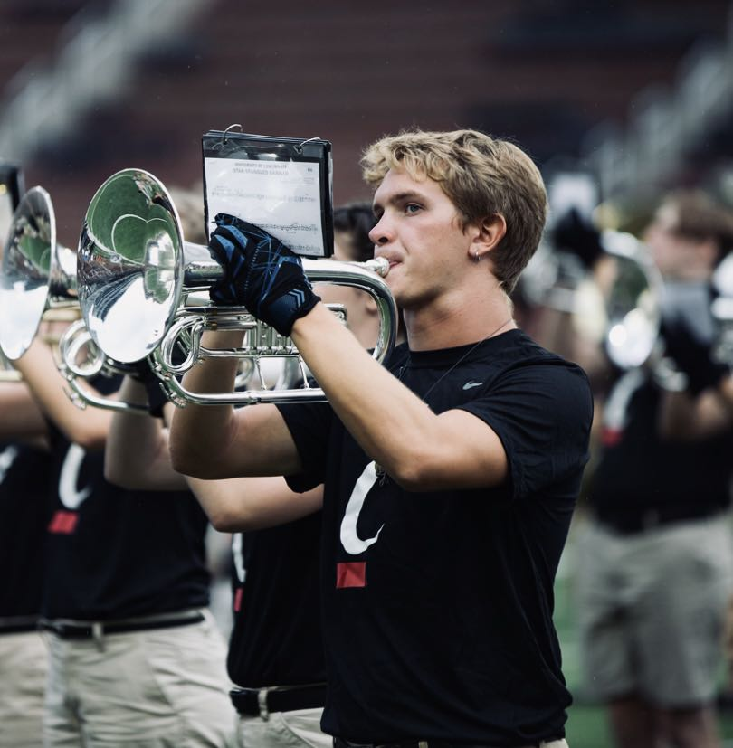
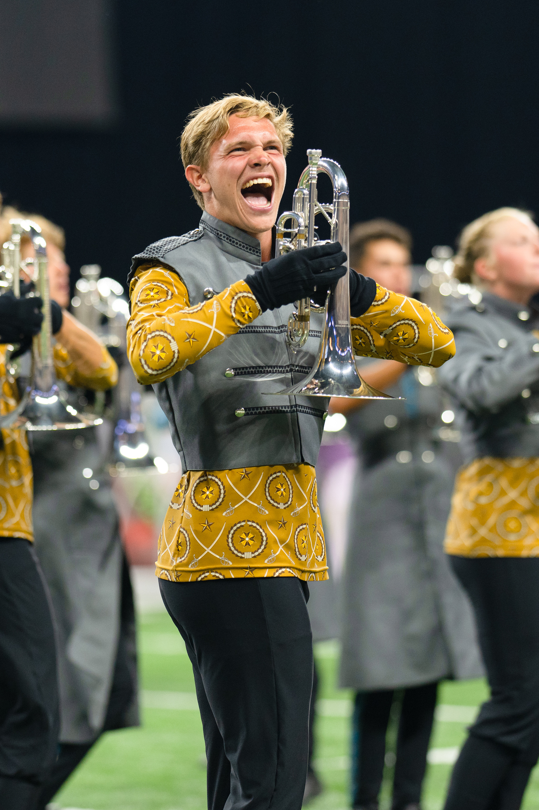
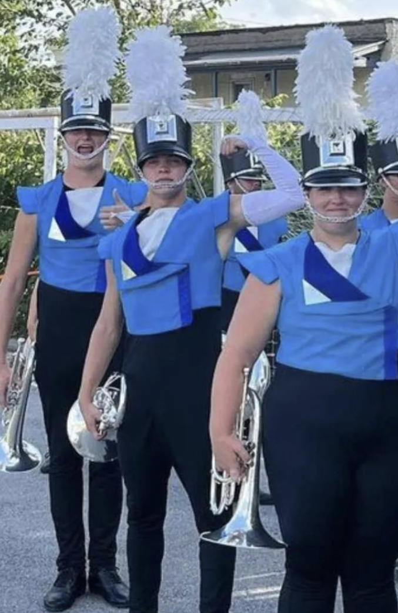
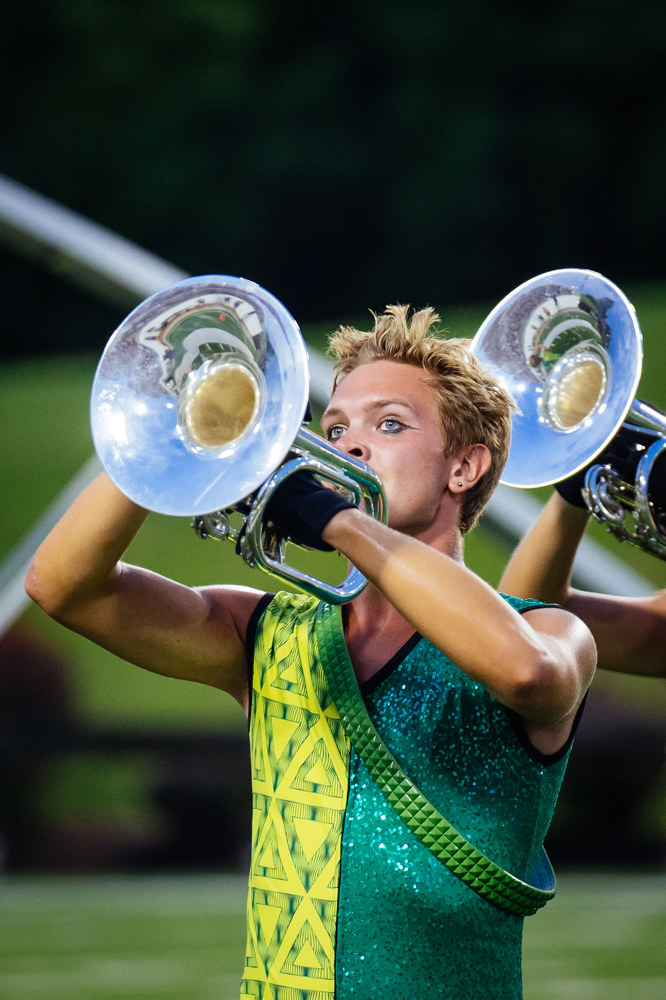
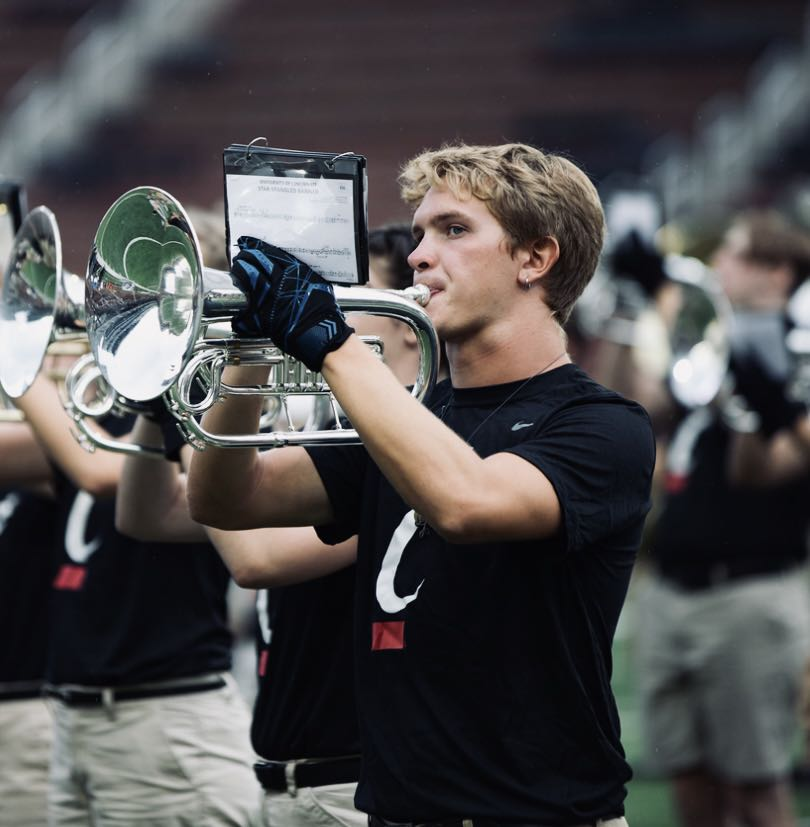

Liam Kornoely
Marching Arts Design and Education
Liam Kornoely
Marching Arts Design and Education
My Marching Experience
I began my marching career in high school at Jenison High School. I played lead trumpet and was a featured soloist in our 2019 production. I was also nominated for best marching technique in my High School.
In 2021, I was contracted to play lead trumpet at Cincinnati Tradition DCA corps.
In 2022, I was contracted to play the mellophone for the Blue Stars drum corps, where we set a new corps record in score and placement. I returned to Cincinnati Tradition in 2022 after the DCI tour had ended to fill a mellophone spot for DCA finals.
In 2023, I returned to the Blue Stars on mellophone for my age-out year. I was part of a featured visual ensemble for the 2023 production.
I spent my final season of eligibility marching at Cap City 2 indoor percussion with the visual ensemble. We broke all previous CC2 score records and placed 3rd overall in Open Class.

 








Marhing Arts Educaion


I am currently working with Cincinnati Tradition all age corps, Music City drum corps, Oak Hill High School and Cap City Indoor Percussion.